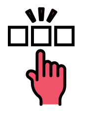
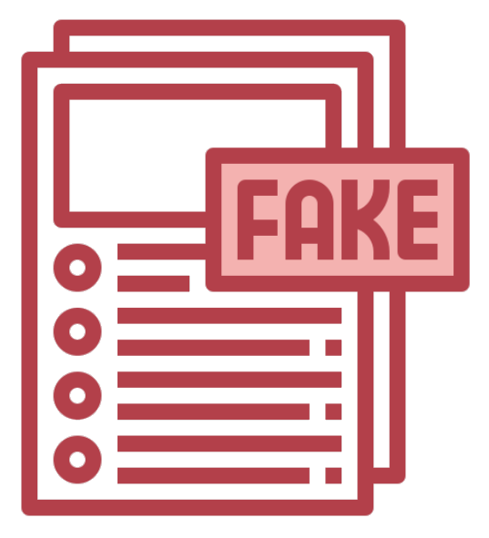
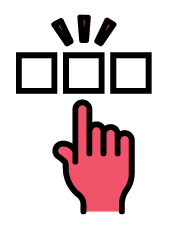
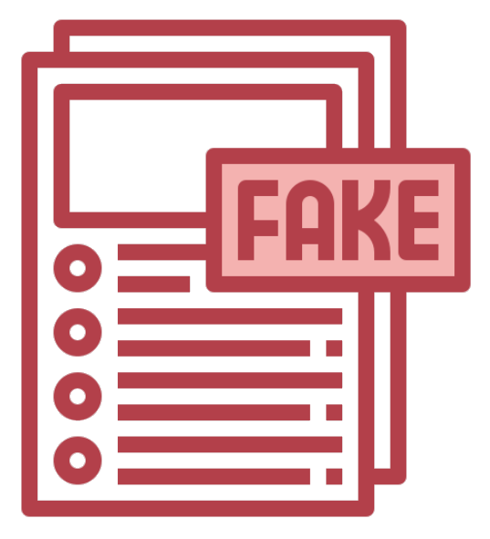

Identify a
signature's
authenticity
Free 30 Days Trial
 Click to Verify
This webapp uses image recognition through machine
Click to Verify
This webapp uses image recognition through machine
learning to validate the true signature of the user.
How to use Signify?
Step 1: Upload.
Upload your first three signatures
that will be placed in the dataset as a
data of comparison for other
signature attempts. Step 2: Select. Select the Image of your signature
which will be scanned to determine
whether it is genuine or forged.  Step 3: Scan. The system will identify the percentage
of the signature accuracy and will tell
whether the signature is forged or genuine.
Signify will help to contribute to such demand for innovations in Image Recognition. It will help to improve one of its sectors which is to determine what are the behaviors of the signature for it to become unique on one's person and use those factors to determine the distinction and implement it as a final product of the study. 
generating substantial breaches in policies
and legal compliance procedures, as money
and benefits are diverted to the wrong people,
putting a burden on economic resources and,
as a result, affecting the economy.
Fake signatures are one of the primary areas of
fraudulent practices that many regulatory agencies
are struggling to deal with.
individual's handwriting, variations of strokes,
and preferred design and style. It is hard to
replicate unless there is an incidence of skilled
forgery happened. However, there is still a basis
for an original signature to discern its
characteristics against a fake one. This is where
image recognition is needed where it can be
able to use different algorithms to carefully verify
an original signature. It can be able to detect in
a small amount of time while giving a higher
precision and accuracy which a normal human can't do.
that will be placed in the dataset as a
data of comparison for other
signature attempts. Step 2: Select. Select the Image of your signature
which will be scanned to determine
whether it is genuine or forged.  Step 3: Scan. The system will identify the percentage
of the signature accuracy and will tell
whether the signature is forged or genuine.
Image Recognition and its Significance
Image Recognition is the process capable of identifying places, people, objects, and many other features inside a picture and extracting conclusions through analysis. It is mostly based on Deep Learning which is a subcategory of Machine Learning that refers to the use of data and algorithms which will be used to gradually learn like a human mind and improve its accuracy.Signify will help to contribute to such demand for innovations in Image Recognition. It will help to improve one of its sectors which is to determine what are the behaviors of the signature for it to become unique on one's person and use those factors to determine the distinction and implement it as a final product of the study. 
Incidence of Forgery
Signature forgery and impersonation aregenerating substantial breaches in policies
and legal compliance procedures, as money
and benefits are diverted to the wrong people,
putting a burden on economic resources and,
as a result, affecting the economy.
Fake signatures are one of the primary areas of
fraudulent practices that many regulatory agencies
are struggling to deal with.
Importance of Signature
Each signature is unique depending on anindividual's handwriting, variations of strokes,
and preferred design and style. It is hard to
replicate unless there is an incidence of skilled
forgery happened. However, there is still a basis
for an original signature to discern its
characteristics against a fake one. This is where
image recognition is needed where it can be
able to use different algorithms to carefully verify
an original signature. It can be able to detect in
a small amount of time while giving a higher
precision and accuracy which a normal human can't do.